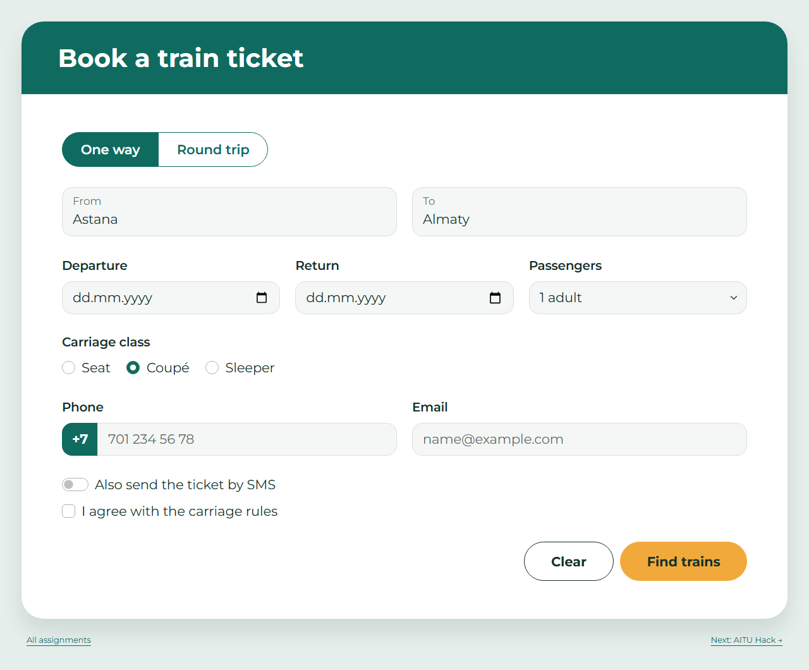
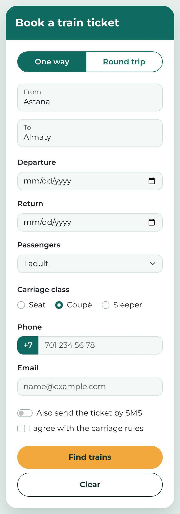
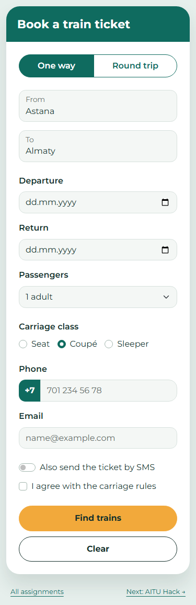
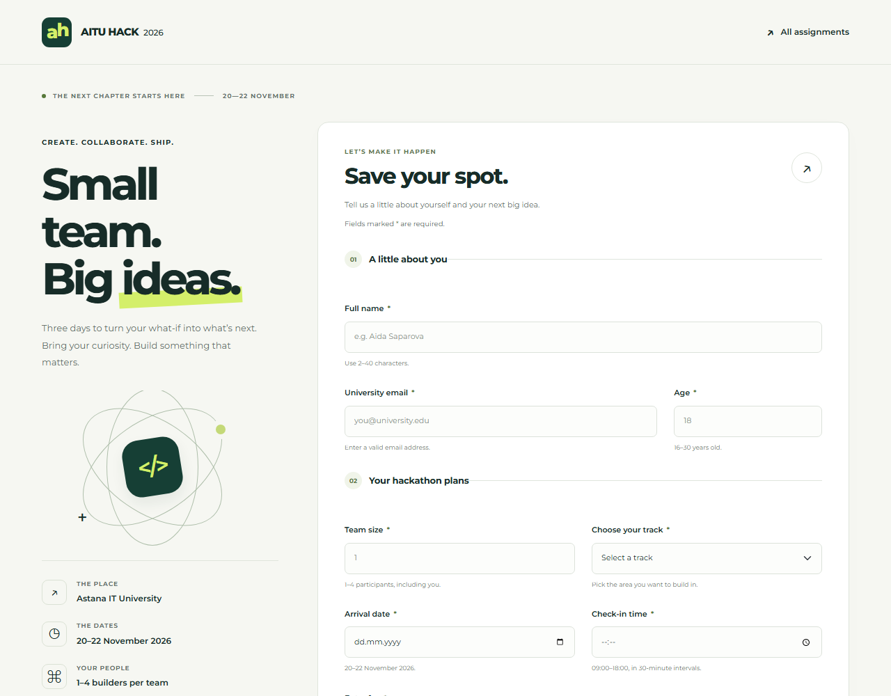
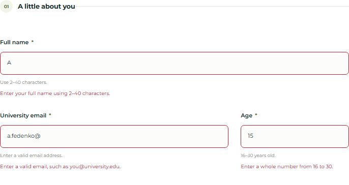
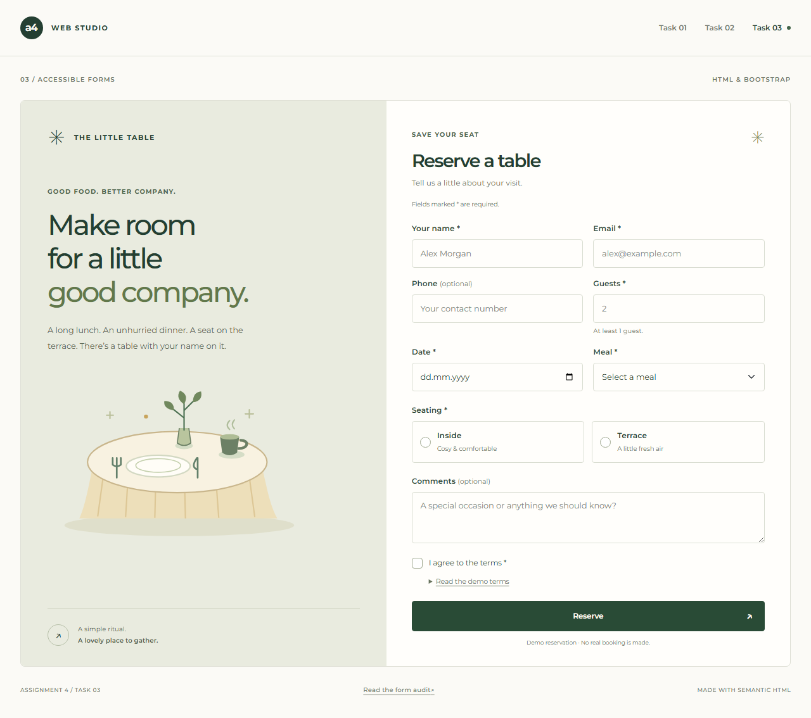

Студент: Aitpayev Tamerlan · Группа: IT-2510 · Дата: 17 октября 2026
GitHub: https://github.com/tamerlanaitpayev1-netizen/web4
В работе реализованы три формы: покупка билета по образцу, регистрация на хакатон с нативными ограничениями и исправленная форма кафе. Bootstrap и Montserrat сохранены локально. В страницах нет JavaScript и атрибута novalidate.
Макет построен на row, col-12, col-md-6 и col-md-4. Использованы form-control, form-select, btn-check, form-check, form-switch и input-group. Собственный CSS задаёт цвета из задания, скругления, тень и отступы; фиксированных ширин и абсолютного позиционирования в CSS этого задания нет.

Рисунок 1. Task 1 — ширина окна 1280 px. Показан пример с выбранными One way, Coupé, 1 adult и введёнными Astana / Almaty; это не исходное пустое состояние.
Обязательны маршрут, дата отправления, класс вагона, телефон, email и согласие; список пассажиров содержит 1–6 взрослых. Return необязателен. Подписи связаны с полями через for/id. Нативная кнопка reset очищает введённые значения и выбор, поскольку исходная форма не содержит value/checked по умолчанию; служебный префикс телефона +7 сохраняется.
На узком экране колонки становятся вертикальными. Классы flex-column-reverse flex-md-row размещают Find trains выше Clear на телефоне, сохраняя порядок элементов в HTML. Ниже исходный мобильный образец и результат при ширине окна 375 px.
Образец из Assignment 4.pdf Макет для 375 px

Результат task1.html Окно 375 px

Форма использует подходящие type и атрибуты required, min, max, step, minlength, maxlength. Правила не зависят от JavaScript; pattern не используется. Все поля обязательны, кроме GitHub. Email проверяется как адрес без ограничения домена. step=1800 у времени означает 1800 секунд, то есть 30 минут.

Рисунок 2. Task 2 — окно 1280 × 1000 px, верхняя часть исходной формы. При открытии сообщения об ошибках скрыты.

Рисунок 3. Ошибочные имя A, email a.fedenko@ и возраст 15 после ввода и смены фокуса: красная граница и текст .invalid-feedback.
CSS показывает сообщения через :user-invalid после взаимодействия с полем. Для составных групп используется :has(). Для клавиатуры предусмотрен видимый фокус; пояснения и сообщения связаны через aria-describedby.
Браузер: Chromium 145.0.7632.6. Все примеры проверены вводом значений и нажатием submit. Для каждого примера остальные обязательные поля заполнены корректно. Итог примеров PDF: 32 из 32 совпали с ожидаемым результатом.
| Поле | Проверяемое значение | Ожидалось | Фактически |
|---|---|---|---|
| Имя | Anna-Maria Lee | Принять | Принято; submit=1 ✓ |
| Имя | A | Отклонить | Отклонено; submit=0 ✓ |
| a.fedenko@astanait.edu.kz | Принять | Принято; submit=1 ✓ | |
| a.fedenko | Отклонить | Отклонено; submit=0 ✓ | |
| a.fedenko@ | Отклонить | Отклонено; submit=0 ✓ | |
| Возраст | 18 | Принять | Принято; submit=1 ✓ |
| Возраст | 15 | Отклонить | Отклонено; submit=0 ✓ |
| Возраст | 31 | Отклонить | Отклонено; submit=0 ✓ |
| Команда | 4 | Принять | Принято; submit=1 ✓ |
| Команда | 5 | Отклонить | Отклонено; submit=0 ✓ |
| Команда | 2.5 | Отклонить | Отклонено; submit=0 ✓ |
| Трек | Web | Принять | Принято; submit=1 ✓ |
| Трек | Пустая опция Choose… | Отклонить | Отклонено; submit=0 ✓ |
| Прибытие | 2026-11-21 | Принять | Принято; submit=1 ✓ |
| Прибытие | 2026-11-25 | Отклонить | Отклонено; submit=0 ✓ |
| Время | 10:30 | Принять | Принято; submit=1 ✓ |
| Время | 10:15 | Отклонить | Отклонено; submit=0 ✓ |
| Время | 19:00 | Отклонить | Отклонено; submit=0 ✓ |
submit=0 означает, что браузер заблокировал отправку и событие submit не возникло; submit=1 означает, что событие возникло у валидной формы. Во время этих проверок тестовый обработчик отменял фактическую отправку. В сдаваемом HTML этого обработчика нет.
Длина имени 2–40, пароля 8–20, мотивации 50–300 задана minlength/maxlength. Числа ограничены min/max: возраст 16–30, команда 1–4, взнос 0–5000. step=1 разрешает только целые числа; step=500 задаёт шаг взноса. Даты ограничены 2026-11-20…2026-11-22, время — 09:00…18:00. У select пустая опция имеет value=""; radio опыта имеют одно name. Обязательное согласие реализовано checkbox с required.
| Поле | Проверяемое значение | Ожидалось | Фактически |
|---|---|---|---|
| Взнос | 1500 | Принять | Принято; submit=1 ✓ |
| Взнос | 1250 | Отклонить | Отклонено; submit=0 ✓ |
| Взнос | 6000 | Отклонить | Отклонено; submit=0 ✓ |
| Опыт | Beginner | Принять | Принято; submit=1 ✓ |
| Опыт | Ничего не выбрано | Отклонить | Отклонено; submit=0 ✓ |
| GitHub | Пустое поле | Принять | Принято; submit=1 ✓ |
| GitHub | https://github.com/yerassyl-dev | Принять | Принято; submit=1 ✓ |
| GitHub | github.com/yerassyl-dev | Отклонить | Отклонено; submit=0 ✓ |
| Пароль | Astana2026 | Принять | Принято; submit=1 ✓ |
| Пароль | short | Отклонить | Отклонено; submit=0 ✓ |
| Мотивация | 120 символов | Принять | Принято; submit=1 ✓ |
| Мотивация | 49 символов | Отклонить | Отклонено; submit=0 ✓ |
| Согласие | Установлено | Принять | Принято; submit=1 ✓ |
| Согласие | Не установлено | Отклонить | Отклонено; submit=0 ✓ |
Дополнительно выполнены 23 проверки граничных и новых значений; успешно: 23. Проверены края диапазонов (16/30, 1, 20/22 ноября, 09:00/18:00, 0/5000), значения вне диапазонов, дробный возраст, длины 2/40, 8/20, 50/300 и все четыре трека.
Проверки ограничения ввода maxlength: 3/3. При попытке набрать лишний символ браузер оставляет длину 40, 20 или 300. Это проверяется реальным вводом, а не только присваиванием значения через программный интерфейс.
Общий браузерный набор: 88/88 проверок. Он включает HTML-атрибуты, примеры, границы, отсутствие ошибок при открытии, появление ошибки после изменения, запрет script/novalidate и отсутствие горизонтального переполнения при 375 и 1280 px. Отдельная проверка клавиатуры и семантики трёх форм: 44/44. Полные данные: docs/task2-results.json и docs/keyboard-results.json; сценарии находятся в tools/.
Клиентская проверка подтверждает формат и указанные ограничения, но не существование email или страницы GitHub. Реальная регистрация, аккаунт и платёж не создаются.
В task3.html сохранены все поля исходника: имя, email, телефон, гости, дата, Inside / Terrace, Lunch / Dinner, комментарий, согласие и Reserve. Добавлены видимые связанные подписи, name для отправки значений, уникальные id, подходящие типы, группы fieldset/legend и нативная submit-кнопка.

Рисунок 4. Исправленная форма кафе — ширина окна 1280 px. Мобильный снимок 375 px также сохранён в screenshots/task3-375.png.
Телефон и комментарий необязательны; количество гостей — положительное целое число. Верхняя граница вместимости и ограничения по дате не выдуманы: в задании их нет. Для клавиатуры доступны Tab, выбор radio стрелками, checkbox пробелом и нативная кнопка отправки.
Нумерация относится к 21 строке исходного фрагмента из PDF, переписанного в reference/task3-original.txt. Полный развёрнутый аудит находится в docs/task3-audit.md. Указаны ошибки разметки, доступности и поведения; не все из них обнаруживает HTML-валидатор.
| № | Строка / точный фрагмент | Проблема для пользователя | Исправление |
|---|---|---|---|
| 1 | 3: <input type="text" placeholder="Your name"> | У имени нет постоянной подписи; placeholder исчезает при вводе. | Добавлены id="full-name" и связанный видимый label. |
| 2 | 4: <input type="text" placeholder="Email"> | Назначение заполненного поля email нельзя понять по постоянной подписи. | Добавлены id="email" и label for="email". |
| 3 | 4: type="text" у Email | Вместо адреса принимается произвольная строка; нет подходящей email-клавиатуры. | Используются type="email", autocomplete="email" и required. |
| 4 | 3, 4, 6, 8, 10, 14, 18, 19: нет name; например <input type="text" id="phone"> | Значения не включаются в обычную отправку формы. Атрибут id не заменяет name. | Каждому полю задано осмысленное name: full_name, email, phone, guests, date, meal, comments, terms. |
| 5 | 5: <label>Phone</label> | Нажатие на подпись не переносит фокус; программной связи с полем нет. | У подписи задан for="phone", совпадающий с id поля. |
| 6 | 6: <input type="text" id="phone"> | Браузер не знает, что поле предназначено для телефона, и может открыть обычную клавиатуру. | Используются type="tel" и autocomplete="tel". Сам tel не проверяет формат номера. |
| 7 | 7–8: for="guests", но id="people" | Подпись Guests не связана с полем количества гостей. | Поле переименовано в id="guests"; for и id совпадают. |
| 8 | 8: type="text" у Guests | Можно ввести буквы, ноль, отрицательное или дробное число гостей. | Заданы type="number" min="1" step="1" required. |
| 9 | 10: type="text" id="date" placeholder="dd/mm/yyyy" | Подсказка не проверяет существование даты; можно ввести произвольный текст. | Используется type="date" name="date" required с нативным вводом даты. |
| № | Строка / точный фрагмент | Проблема для пользователя | Исправление |
|---|---|---|---|
| 10 | 10 и 12: повторяется id="date" | Повторный id нарушает уникальность и делает связи элементов неоднозначными. | У даты остаётся id="date"; у Inside — seating-inside; у Terrace — seating-terrace. |
| 11 | 12–13: name="inside" и name="terrace" | Оба варианта можно выбрать одновременно: это разные radio-группы. | Общее name="seating" и разные value="inside" / "terrace". |
| 12 | 12–13: текст > Inside и > Terrace | Нажатие на текст не выбирает вариант; у radio нет надёжной подписи. | Каждый вариант помещён в label, дополнительно связанный через for и уникальный id. |
| 13 | 11–13: <p>Seating:</p> перед radio | Текстовый заголовок не задаёт семантическую группу для вспомогательных технологий. | Варианты объединены fieldset с legend Seating. |
| 14 | 14: <select> | Не объясняется назначение списка Lunch / Dinner; нет связанной подписи. | Добавлены id="meal", name="meal", label и пустая начальная опция. |
| 15 | <textarea placeholder="Comments"></textarea> (18) | Подсказка комментария исчезает при вводе; постоянной подписи нет. | Добавлены id, name и связанный label. Комментарий помечен как необязательный. |
| 16 | 19: <input type="checkbox"> I agree to the terms | Текст не переключает checkbox, отсутствует связанное доступное имя. | Добавлены id="terms", name, value, label for="terms" и required. Условия доступны в details. |
| 17 | 20: <div class="btn btn-primary">Reserve</div> | Элемент похож на кнопку, но не отправляет форму и не имеет нативного клавиатурного поведения. | Заменён на <button type="submit">; работают клавиатура, валидация и отправка. |
Отсутствие doctype, head и body не названо ошибкой исходника: в PDF показан фрагмент. В итоговой самостоятельной странице эти элементы, lang="en", UTF-8 и viewport добавлены. Отсутствие action/method у исходного form также допустимо: браузер использует текущий адрес и GET.
1. Guests, строки 7–8. Можно оставить id="people" и заменить подпись на for="people" — это минимальное корректное изменение. Выбрано id="guests", чтобы for, id и name назывались одинаково. В автономном учебном фрагменте нет зависимостей от старого id; в существующем проекте перед переименованием потребовалось бы проверить такие зависимости.
2. Reserve, строка 20. Вместо button допустим <input type="submit" value="Reserve">. Выбран button type="submit", потому что он позволяет поместить внутри текст и декоративную стрелку с aria-hidden, сохраняя нативную отправку и доступное имя. Одни role="button" и tabindex на div не добавили бы отправку и клавиатурное поведение.
| Страница | Фактический результат | Сохранённое доказательство |
|---|---|---|
| task1.html | Ошибок: 0; предупреждений: 0. Проверка пройдена. | docs/w3c-task1.json |
| task2.html | Ошибок: 0; предупреждений: 0. Проверка пройдена. | docs/w3c-task2.json |
| task3.html | Ошибок: 0; предупреждений: 0. Проверка пройдена. | docs/w3c-task3.json |
| index.html | Ошибок: 0; предупреждений: 0. Проверка пройдена. | docs/w3c-index.json |
| completed.html | Ошибок: 0; предупреждений: 0. Проверка пройдена. | docs/w3c-completed.json |
В отчёте использованы сохранённые ответы официального валидатора, а не предположение о корректности. Поле _evidence в JSON содержит URL валидатора, время проверки и количество ошибок. Проверка HTML дополняет проверку клавиатурой и поведения формы.
Запуск: python serve.py, затем http://127.0.0.1:8000/. Формы отправляют POST на completed.html; локальный сервер считывает и отбрасывает введённые данные, затем перенаправляет на страницу завершения. Полноценного backend, хранения, выдачи билетов или бронирования нет. Для реального сервиса понадобились бы серверная валидация и бизнес-логика.
Работа показывает, как собрать адаптивные формы Bootstrap, выразить ограничения нативными HTML-атрибутами и объяснить ошибку после взаимодействия с полем. Связанные подписи, общие radio-группы, name и настоящие кнопки одновременно улучшают доступность и правильность отправки. Проверка границ дополняет примеры из задания и помогает подготовиться к новым значениям на защите.
Исходное задание и изображения: Assignment 4.pdf, предоставленный для этой работы. Технические источники:
Bootstrap 5.3: формы и компоненты
MDN: HTML constraint validation
MDN: input type=time и шаг в секундах